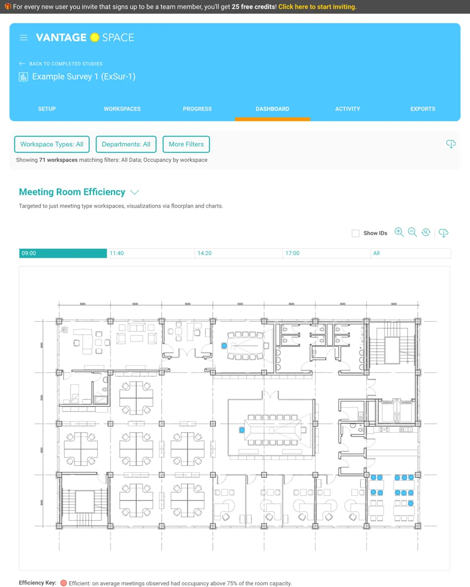
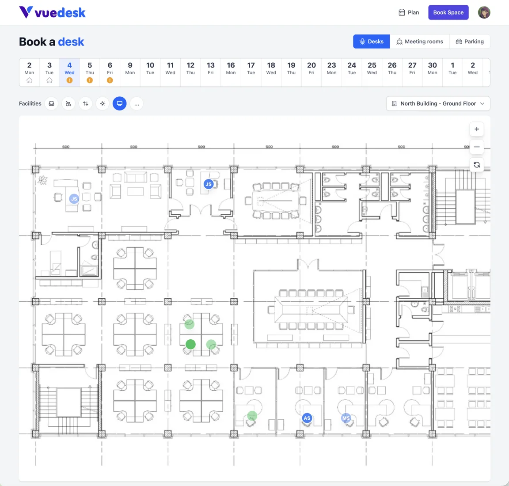

I design software for people with real work to do.
I'm Heather. I've been building software since 2007: first as a developer, then running client projects at an agency, and from 2018 as Head of Product at Vantage Space. I design the product, I can write the front end, and I know when to leave the architecture to someone else.
Based near Wrexham, UK · Open to product design and product roles
Projects

Vantage Space ↗
Sensor-free workplace occupancy studies, used by over 40% of the Fortune 100. How we added richer data collection for CBRE without slowing anyone else down.

vuedesk ↗
Desk booking for $1 a space, every feature included. From competitor research to a live first version in about two weeks.
Smaller products, mostly AI.
From 2020 we also ran as a small product studio, trying to get from idea to something people could use as quickly as possible.
Magic Bookshelf. A story app where children design a cartoon version of themselves and then appear in the illustrations. The idea came from asking an AI for bedtime stories with my daughter as the hero. Because the audience was children, there's no free text input at all: you build your character and story by tapping pictures, and the AI stays behind the scenes.
nxt. A to-do list you talk to. You describe a task in plain language, it breaks it down, and it uses what it knows about how you work to suggest the one thing to do next.
Hearo. A survey tool where people answer in their own language and you read the answers in yours, with AI handling the translation both ways.
BadgeIQ. A free tool that turns badge-swipe data into anonymous trends, so workplace teams can spot patterns without tracking individuals.
Developer, then consultant, then product.
I joined a small software company straight from university as its first employee, writing PHP. As it grew into an agency I moved into Rails and front-end work, then into running projects with clients such as CBRE, the Independent Schools Inspectorate and Morgan Lovell: working out what they actually needed and turning it into specs and designs our developers could build.
A lot of that work was in commercial real estate, and we kept seeing the same gap in how occupancy data was collected. So we built our own tool. That became Vantage Space, and I was its Head of Product from 2018. It's the part of my career I'm proudest of, but the agency years taught me the thing I enjoy most: sitting with the people who'll use a product and learning how their work really happens.
I've facilitated five-day Design Sprints and tested ideas with users on live products and Figma prototypes. These days I design mostly in code. I started out hand-writing HTML and CSS, so I know what the browser can do, and with Cursor I can build a working prototype, or a small production change, rather than a picture of one.
I'm also realistic about where that stops. I once used AI to build a complete help system for one of our survey tools. The front end was polished and it worked, but our senior developer took one look at the backend and quietly rewrote it. It still saved time overall, and it's a good reminder of who should own what.
Say hello.
If you're hiring for product design or product, I'd love to hear about it.